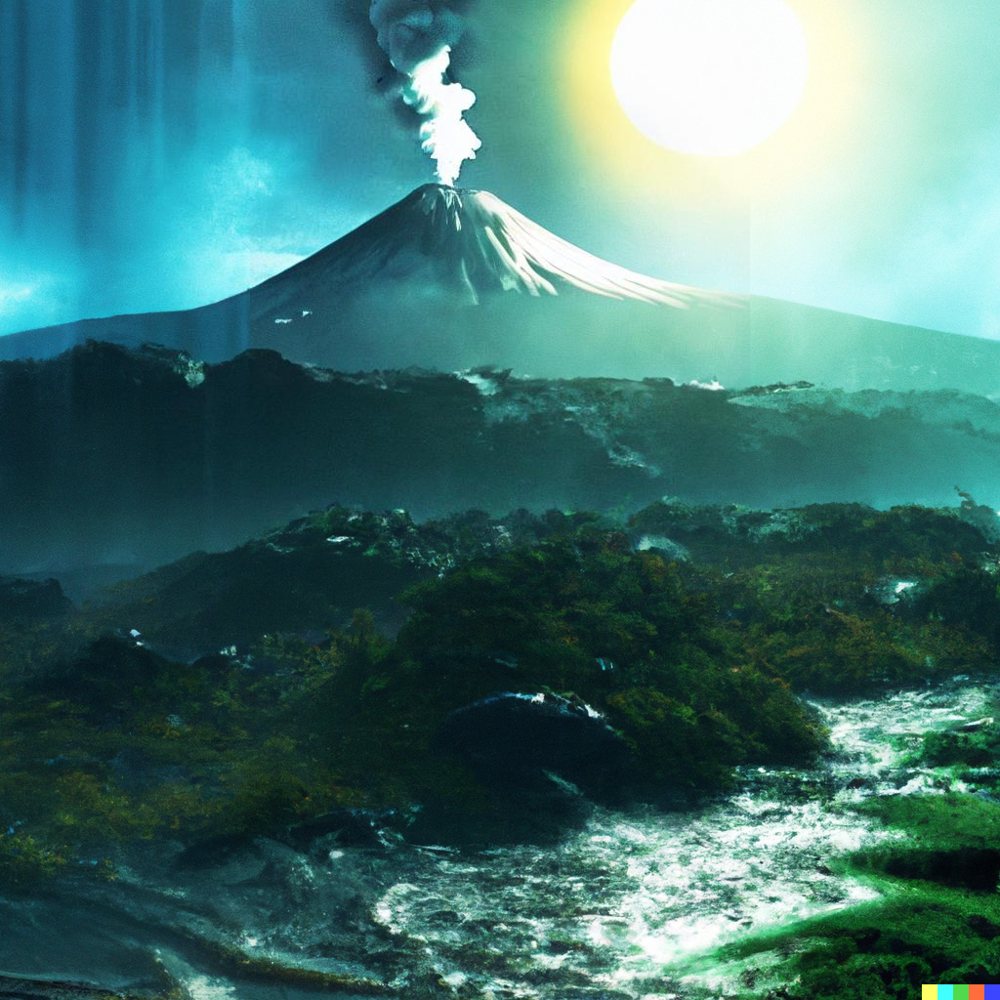
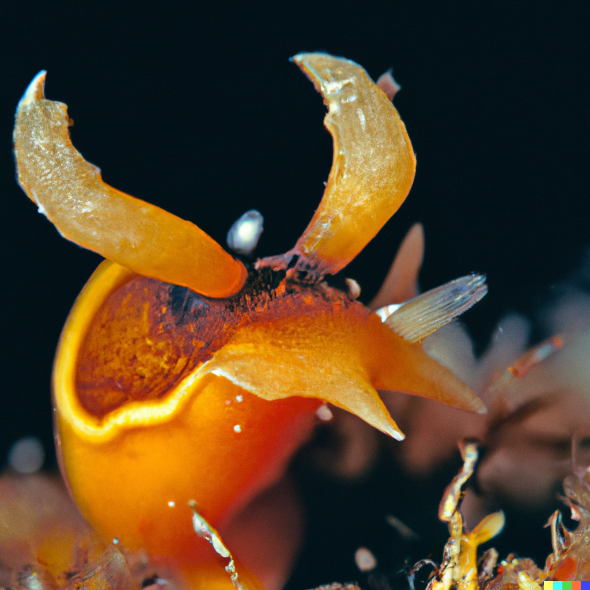
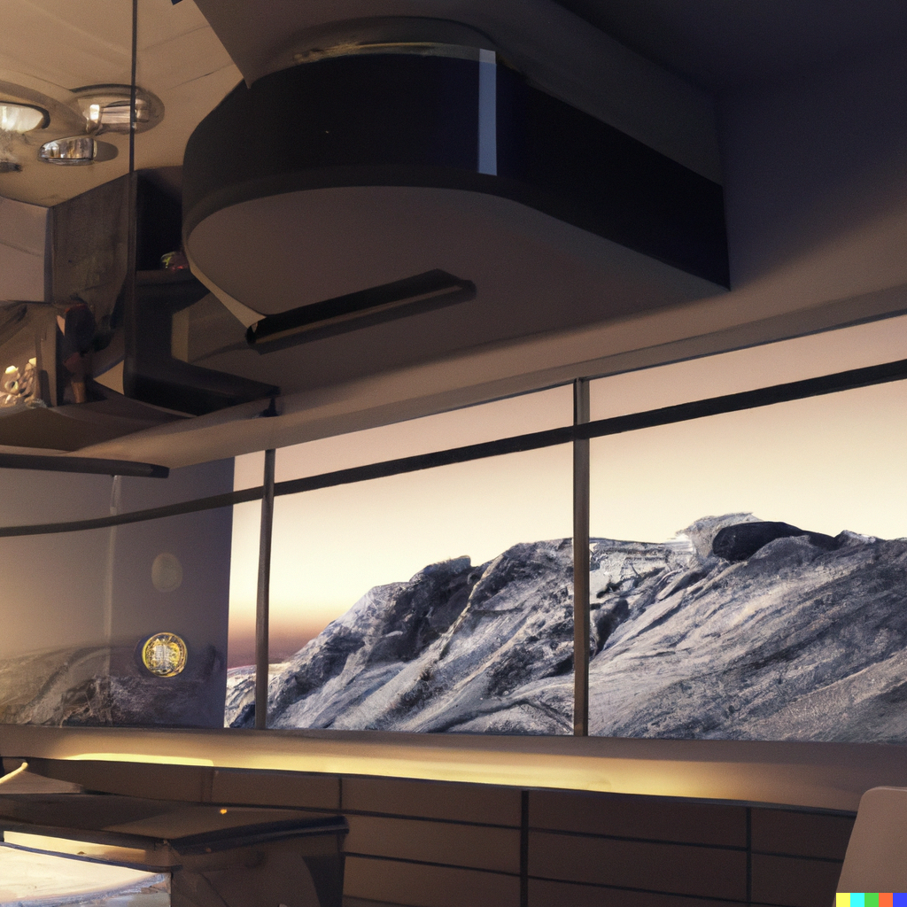

Bienvenidos a SA-2977, un exoplaneta único en el espacio, donde te espera una oportunidad de vida inigualable. En este rincón del universo, la tranquilidad y la serenidad son la norma, y a pesar de las bajas temperaturas que lo caracterizan, la belleza y la abundancia son parte integral de cada paisaje.
SA-2977 es un verdadero prodigio de la astrobiología. A partir de la temperatura efectiva y luminosidad de su estrella, TOI-2977, se estima que el planeta debe estar a 1.94 Unidades astronómicas de su estrella anfitriona. Con esta información se estima que un año se extenderá a lo largo de 398 días terrestres, la vida aquí ha evolucionado de manera extraordinaria para adaptarse a condiciones únicas. Esta adaptación incluye la optimización de la captura de la luz estelar, lo que nos permite aprovechar al máximo cada momento del día.


Aunque podrás reconocer la belleza de la vegetación terrestre en SA-2977, la verdadera joya de nuestra gélida biosfera se encuentra en nuestros cuerpos de agua y regiones litológicas. Estos lugares albergan una riqueza inigualable de vida marina y criaturas exóticas. Entre ellas, algunas son autótrofas, capaces de producir su propio alimento a partir de la luz estelar, mientras que otras son heterótrofas y dependen de estas fuentes de energía.
Los ciclos biogeoquímicos desempeñan un papel esencial en el equilibrio de nuestro ecosistema. Los majestuosos volcanes y las formaciones rocosas son nuestros aliados en este proceso, liberando minerales y nutrientes esenciales en el suelo y el agua, permitiendo que la vida prospere en este entorno único.
Nuestra sociedad en SA-2977 se caracteriza por su profundo respeto por el medio ambiente y su firme compromiso con la sostenibilidad. Hemos establecido un día de sobregiro en el que reflexionamos y trabajamos incansablemente para minimizar nuestra huella ecológica. La fotosíntesis y la fijación de carbono son procesos vitales aquí, ya que los organismos autótrofos convierten la luz estelar en energía mientras capturan el carbono en sus estructuras, lo que contribuye a mantener un equilibrio ecológico sostenible.
Una característica única de SA-2977 es nuestra alta producción de energía solar gracias a la radiación. Esto nos permite prescindir por completo de empresas eléctricas y combustibles, ya que vivimos en un planeta nocturno. Aquí, no hay necesidad de madrugar ni de preocuparnos por los costos de energía.


Para mantenernos cómodos en este ambiente fresco, contamos con tecnología de aislamiento y sistemas de calefacción eficientes. Así, disfrutamos de un equilibrio ecológico envidiable al tiempo que vivimos de manera conveniente y económicamente sostenible.
Ven y únete a nosotros en SA-2977, donde la aventura, la exploración y la coexistencia armoniosa con la naturaleza te esperan. Aquí, la promesa de una vida plena se combina con el compromiso inquebrantable de cuidar y proteger nuestro hogar. Bienvenidos a SA-2977, la segunda posible Tierra que siempre soñaste, un testimonio viviente de la capacidad de la vida para florecer en los rincones más inverosímiles del universo.